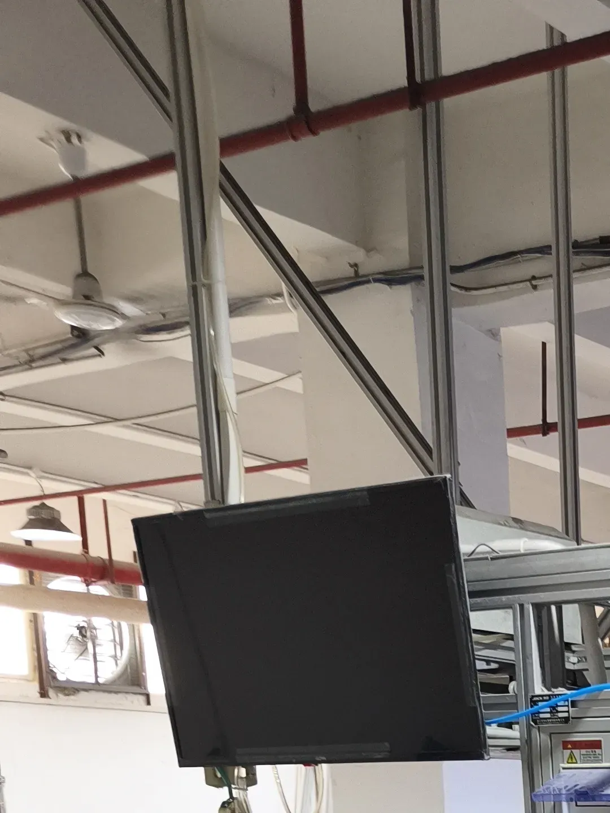
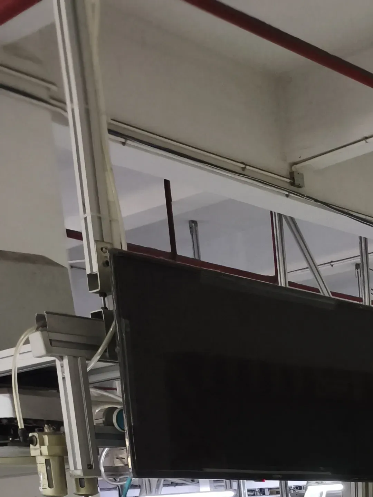
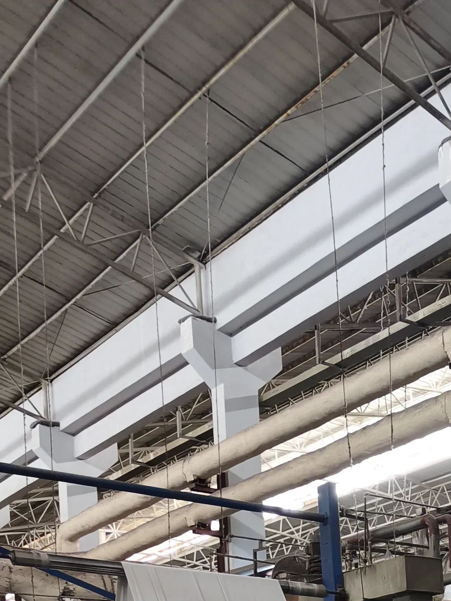
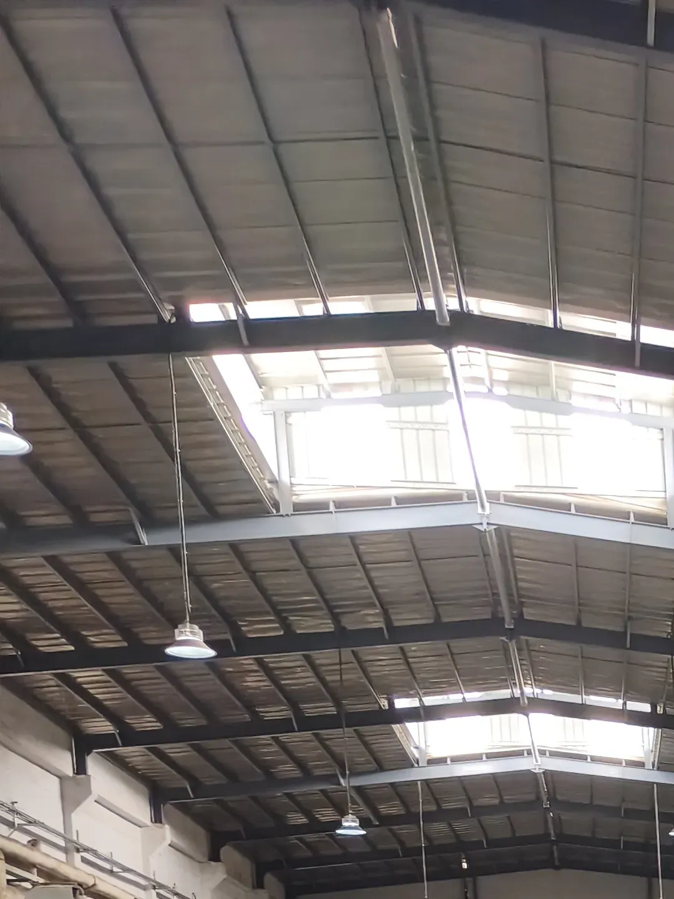
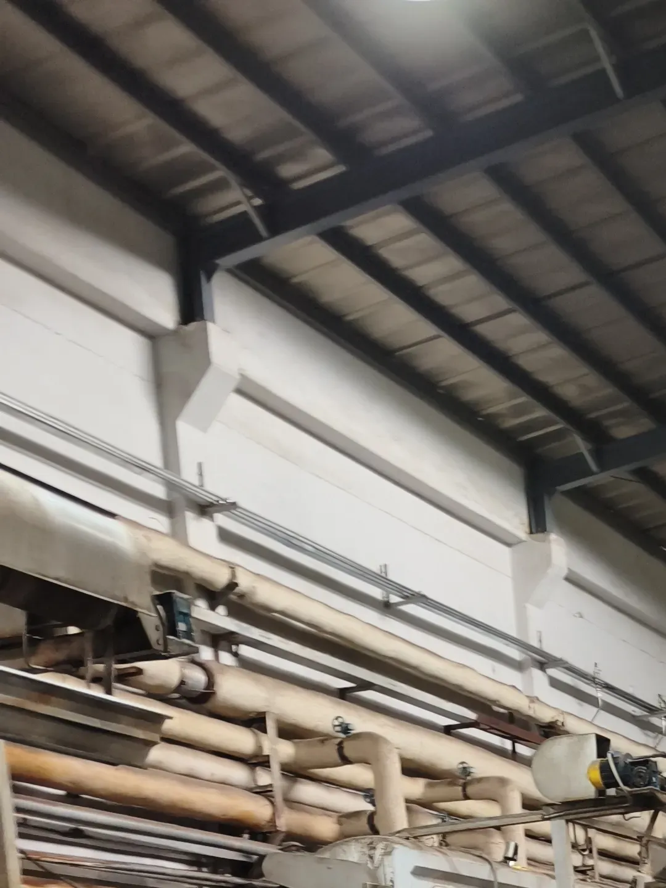
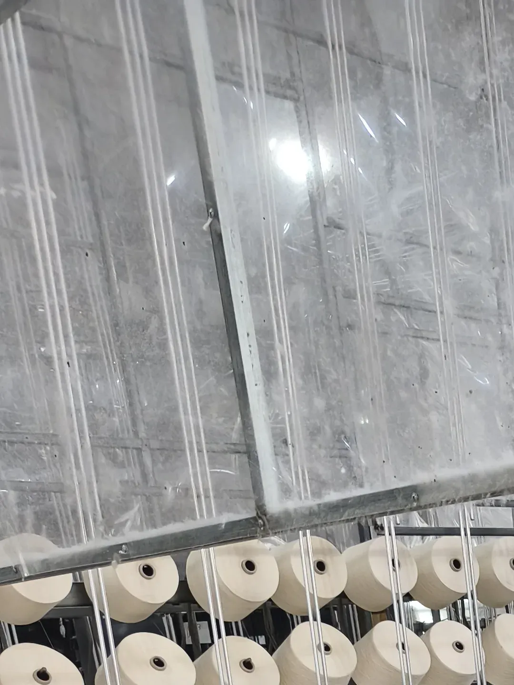
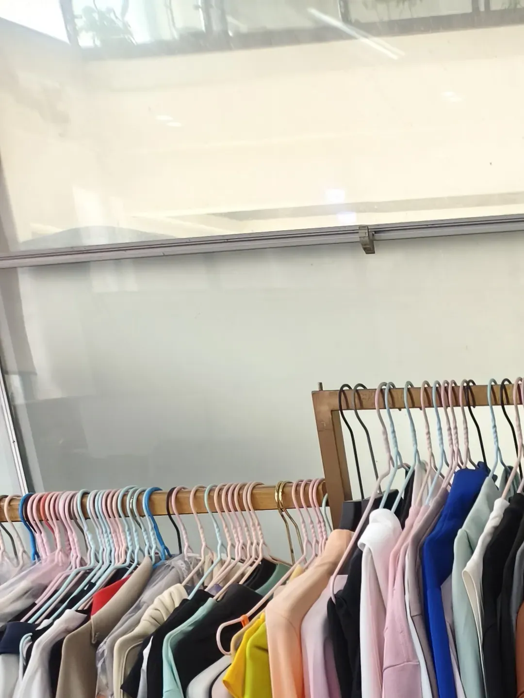

01 Why a Full-Chain Factory Changes the Sourcing Game
When you source apparel from China, the biggest risk is rarely the factory you think you are dealing with. It is the unseen subcontractors. A typical garment order passes through several separate shops: a weaver, a dye house, a cutting workshop, a sewing unit, a washing and finishing plant, then a packing agent. Each handoff is a chance for quality to drift, lead times to slip, and responsibility to disappear.
That is why a vertically integrated mill stands out. One facility owns the entire chain, so the same management, the same quality system, and the same standards apply from the first spool of yarn to the last carton sealed for export. There is no one else to blame, and no one else to wait on.
02 Walking the Floor of a 55,000 sqm Integrated Mill
The factory we visited sits in Zhaoqing, Guangdong, and covers roughly 55,000 square meters with more than 500 staff on site. Daily output runs between 10,000 and 30,000 finished pieces depending on the product mix. Those numbers only mean something when you see the floor in person.
We walked the full layout rather than a guided highlight reel. What you want to observe on any visit is whether production is actually running, whether workstations are clearly divided, and whether quality checkpoints exist between stages rather than only at the end. A busy, organized floor is the simplest signal that a factory can deliver what it promises.

The scale of an integrated textile and garment complex in Zhaoqing, Guangdong.
Scale alone is not a guarantee of quality, but it does tell you the operation is built for volume and repeat orders, not one-off samples.
03 What "One Roof" Really Means: The Full Process Chain
A claim of "full chain" is easy to print on a website and hard to prove on a floor. At this mill, the steps sit inside the same walls:
- Spinning and weaving: Yarn preparation and fabric construction on site
- Dyeing and finishing: Color and surface treatment controlled in-house
- Cutting: Pattern and fabric cutting for the production run
- Sewing: Garment assembly across dedicated lines
- Post-finishing and washing: Final treatment before inspection
- Quality control: Checks built into the line, not only at packing
- Packing: Export-ready cartons prepared for shipment
When one team runs all of these, a color issue caught at dyeing can be fixed before it ever reaches sewing. A cutting error is contained before it becomes 10,000 defective units. That is the practical advantage of integration, and it is exactly what a buyer should look for.

Active production across the integrated manufacturing floor.
04 Photo Gallery: Inside the Factory
A few more views from the visit. These show the facility, the equipment, and the working floor from different angles.





Selected views from the factory visit. Photos are unedited from the floor.
05 Why Importers Should Care: Quality, Lead Time, Accountability
For a buyer placing a bulk apparel order, an integrated mill changes three things that directly affect your bottom line:
- Quality consistency: One quality system from fabric to finished garment means the bulk order looks like the sample, not "close enough".
- Lead time control: No waiting on outside subcontractors. The factory schedules its own chain, so delays are easier to predict and fix.
- Single accountability: When something is wrong, there is exactly one partner responsible. No finger-pointing between a dye house and a sewing shop.
This is also why working with a local sourcing agent matters. An agent who can stand on the floor, photograph each stage, and report back in plain language gives you the same visibility without flying to China yourself.
06 What We Check on a Garment Factory Visit
After visiting dozens of factories across Guangdong, we follow a consistent checklist. For apparel, these are the points that separate a reliable mill from a risky one:
Factory Legitimacy
Business license, real production evidence, scale versus claimed capacity
In-House Scope
Which steps are done on site versus outsourced, and how that affects lead time
Process Control
Equipment condition, line organization, QC checkpoints between stages
Fabric and Trim
Material grade, color fastness, trim and accessory quality versus the spec
Compliance Docs
OEKO-TEX, REACH, and other certifications required by your destination market
Packaging Standards
Carton strength, labeling accuracy, export suitability for long shipping
07 Can't Visit in Person? We Go For You
Most of our clients are based in the US, Europe, Australia, or Southeast Asia. Flying to China for every factory visit is not realistic, which is exactly why a local sourcing partner exists.
When you work with Youna Global, you get a local presence in Guangdong that acts as your eyes and ears on the ground:
- Yes We visit factories on your behalf before you place any order
- Yes We photograph and video every stage, from fabric to packing
- Yes We write clear inspection reports and flag any gap from your specifications
- Yes We negotiate directly with factory management in Chinese, with no language barrier
- Yes We arrange pre-shipment inspection so quality is confirmed before goods leave the factory
If you are planning an apparel order from China, send us your product details and target quantity. We will tell you what we would do, which factories fit, and how to avoid the usual surprises.
Find Us on Social Media
Follow Karsa for sourcing tips, product updates, and factory insights from China.